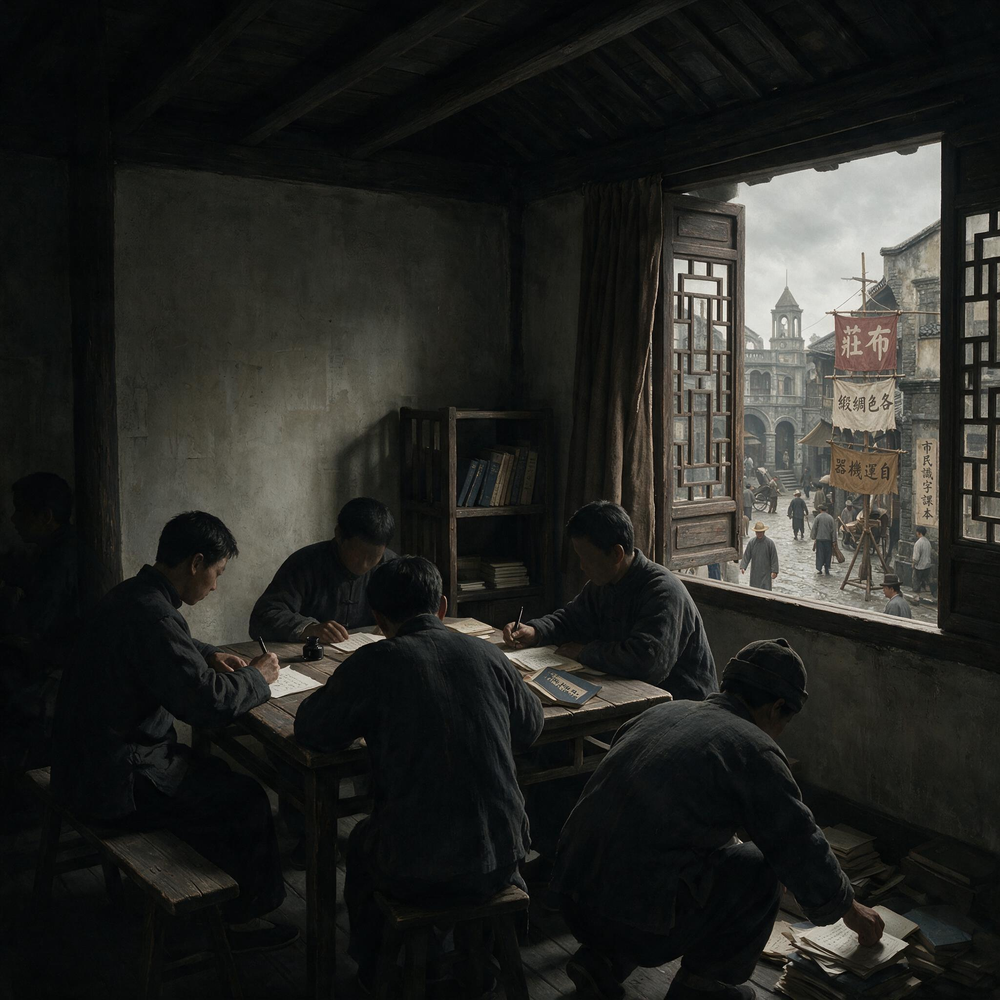

第 1 章
清党逼出的地下状态
1927年4月，上海闸北商务印书馆的排字房里，一份已经拼好版的《向导》周报第191期停在印刷机上。排字工人没有来上班。前一天，闸北宝山路上出现了穿灰布军装持枪的士兵，挨家挨户查问“

清党逼出的地下状态：历史出版插图
AI 生成插图，非史实影像。
有没有共产党”。商务印书馆的印刷所此前多次承印《向导》，经理知道这份刊物意味着什么。他下令拆版，把铅字回炉。
这份发行量一度达到近三万份的中共中央机关报，就此停刊。从1922年9月创刊起，《向导》连续出版了近五年。它的发行网络覆盖全国主要城市，读者包括学生、教师、工人和低级军官。每一期通过邮局寄往各地分销处，分销处再转发给订户和报贩。这个发行网络本身就是一个组织网络：分销处往往就是地方党组织的联络点，订户名单就是潜在的发展对象名单，往来通信中夹杂着比刊物内容更敏感的信息。此刻，这个网络的中枢节点在上海的印刷车间里无声无息地消失了。各地分销处还在等下一期刊物，他们不知道刊物已经停办，也不知道应该继续等下去还是转移地址。
同一周，上海总工会的公开办公地点被查封。总工会设在闸北中华新路的一栋两层楼房，门口挂着木牌，每天有工人进进出出交会费、领罢工津贴、打听消息。查封当天，执行任务的士兵砸开大门，搬走了桌椅、油印机、会员名册和保险柜里的现金。总工会委员长李立三不在现场——他已经在三天前转入地下。但名册上有几千个名字和住址。这些名字很快成为搜捕的索引。
清党不是一场突然降临的灾难，但它的打击速度超出了大多数共产党人的预期。1927年3月，北伐军进入上海时，共产党人在街头欢迎的队伍里公开露面。上海总工会组织工人纠察队，在闸北、南市、浦东设立据点，有些纠察队员穿着统一制作的蓝布制服在街上巡逻。3月21日，上海工人第三次武装起义成功，起义指挥部设在闸北商务印书馆职工医院，指挥部成员周恩来、赵世炎、罗亦农等人公开指挥了这场行动。起义后成立的上海特别市临时市政府中，共产党人占据了关键职位。这一切发生在不到一个月前。
4月12日凌晨，国民党军队联合青帮武装同时对工人纠察队据点发动袭击。闸北湖州会馆的纠察队总指挥部遭到围攻，队员缴械后被押走。南市、浦东、吴淞各处的纠察队在同一天被解除武装。次日，游行请愿的工人队伍在宝山路遭到机枪扫射，死伤数百人。此后数周，搜捕从上海扩展到广州、长沙、武汉、南京。国民党清党运动与各地军阀的镇压行动叠加，形成对共产党组织系统的一次全面打击。
中共在1927年春夏之交遭遇的，不是一个敌人的进攻，而是一个政治空间的突然坍塌。此前六年，这个政党习惯了在军阀割据的缝隙中公开或半公开活动。它的组织方式、干部结构、联络习惯和行动节奏，都是按照公开政治组织的逻辑建立起来的。清党打掉的不只是一批党员，而是这套公开运作所依赖的全部条件。
要理解这场打击的深度，需要回溯1921年建党以来形成的组织形态。1921年7月，中共一大在上海法租界望志路106号召开时，全国党员只有五十余人。
到1922年二大时增至一百九十五人，1923年三大时四百二十人，1925年四大时九百九十四人。这个规模决定了组织的日常活动方式：办刊物、开读书会、组织工会和夜校。上海、北京、广州、武汉等地的党组织，本质上是一群以知识分子为核心的宣传团体，成员之间通过共同编辑刊物、参加集会、授课和通信保持联系。
刊物是这一时期最重要的组织纽带。《向导》周报1922年9月在上海创刊，主编蔡和森，主要撰稿人包括陈独秀、瞿秋白、彭述之等。这份报纸公开发行，通过邮局寄往全国各地，在知识分子和青年学生中流传。各地党组织还创办了《前锋》《新青年》《中国青年》《工人之路》等刊物。这些出版物的编辑部和发行网络并不处于完全隐蔽状态——编辑住在租界公寓里，稿件通过邮局传递，印刷委托商业印刷所，发行依赖书店和报贩。北洋政府和租界当局时常查禁这些刊物，但查禁的方式是没收当期印刷品、罚款或短暂拘押编辑，而非系统性追捕整个组织网络。工人运动同样在公开条件下展开。
1922年安源路矿工人大罢工中，李立三、刘少奇直接出面与路矿当局谈判，罢工期间工人俱乐部公开活动，罢工结束后俱乐部甚至获得了合法地位。1925年五卅运动爆发后，上海总工会公开成立，在闸北设立办公地点，李立三任委员长，刘少奇任总务主任。总工会向各工厂派出代表组织罢工委员会，在街头募捐，发行《上海总工会日刊》。这些活动发生在租界和华界的管辖缝隙中——租界巡捕房主要关注治安秩序，华界军阀当局则因派系分立而态度不一。
国共合作进一步扩大了这种公开活动空间。1924年国民党改组后，共产党员以个人身份加入国民党，部分党员进入国民党各级党部、军队政治部和群众团体工作。1926年1月，毛泽东出席国民党第二次全国代表大会，被选为宣传报告审查委员。在此前后，他兼任过国民革命军第二军军官学校政治教官、国立广东大学附中教员、中央农民运动讲习所教员等多重职务。这些身份都是公开的。同年12月，毛泽东发表《中国社会各阶级的分析》，该文后来于1927年4月出版，为最早的毛泽东著作单行本。
1927年3月，他的《湖南农民运动考察报告》在《战士》周报连载，同年4月出版单行本——这本书的出版本身，就说明当时共产党人的活动尚未完全转入地下。保密规则在这一时期主要用于保护机关地址和干部行踪，并不构成独立的秘密工作制度。党内文件传递依靠通信员携带或邮寄，会议通知通过口头或简单暗语传达，机关选址注意避开警察频繁巡查的地段。
但这些措施是零散的、经验性的，没有形成统一的纪律规范和组织流程。一个地方党组织的负责人通常知道辖区内大多数党员的真实姓名、住址和职业；上下级之间的通信使用真实地址或固定邮箱；
党员之间横向交往频繁，一起开会、吃饭、参加公开活动。这种组织形态的效率在于动员速度快、协调成本低——一个罢工指令可以在几天内传达到各工厂支部，一份传单可以在一周内从上海寄到武汉并翻印散发。但脆弱性也恰恰埋在这里：一旦某个节点被突破，牵连面极大。
清党把这种脆弱性变成了现实。搜捕的逻辑很简单：国民党掌握了大量党员名单。这些名单来自几个渠道。
一是国共合作期间，许多共产党员以个人身份加入国民党，在国民党各级党部登记了真实姓名和职务。二是工人运动中积累的工会名册、罢工委员会名单、纠察队编制表。三是被捕获的机关文件中包含的通信地址和联络人信息。四是叛变者提供的线索。
四一二政变后，上海警备司令杨虎和国民党上海清党委员会主任陈群主持的搜捕行动，核心手段就是按名单抓人。名单上的名字一个个被划掉。上海区委委员、组织部主任赵世炎于1927年7月被捕，随后被处决。江苏省委书记陈延年于同年6月被捕，数日后被处决。广州的共产党组织在四一五政变中遭重创，中共广东区委委员李森、刘尔崧等人被捕杀害。长沙的马日事变后，湖南省委遭到破坏。武汉在七一五分共后也开始搜捕共产党人。到1927年底，全国党员人数从五大时的五万七千余人锐减至一万余人。但数字只反映了损失的一部分。更致命的打击发生在组织链条上。
一个公开政治组织的运转依赖稳定的联络关系：上级知道下级的地址，下级知道上级的指令渠道，同级之间共享信息和资源。清党打碎了这些联络关系。上海总工会被查封后，下属各产业工会的负责人失去了与总会的联系。他们不知道总会是否还存在、谁在负责、新的联络点在哪里。有些人试图按照旧地址去找，发现那里已经人去楼空或者被警察蹲守。有些人派出通信员去联络熟悉的同志，通信员一去不返——可能被捕，可能躲藏起来，也可能叛变后带着警察回来抓人。
失联是这一时期最常见的状态。一个基层支部的书记可能发现，上级已经几周没有派人来接头了。他不知道上级是被捕了还是在转移途中，不知道是否应该继续等待还是主动寻找新的关系。如果他冒险出去打听，可能暴露自己；如果继续等待，可能永远等不到。这种不确定性本身就是一种腐蚀剂：它瓦解的不是某一个党员的信心，而是整个组织赖以运转的确定性——你知道下一步该做什么，知道谁可以信任，知道指令从哪里来。原有依靠公开身份的干部体系迅速失效。
那些在国共合作期间以合法身份活动的干部，他们的姓名、住址和社会关系已经暴露。他们无法继续使用原来的身份和联络方式，必须改名换姓、转移住所、切断旧的社会关系。但这样做本身就意味着与组织失去联系——因为他们以前就是靠这些社会关系来维持组织联系的。一个在广州农民运动讲习所任教的党员，他的学生、同事和通信地址都是公开的。一旦他转入地下，这些关系全部作废，他必须从零开始建立一套新的联络网络，而这个过程既需要时间，也需要组织的配合——但组织本身也在瓦解中。
中共中央被迫把生存问题放在政治动员之前。1927年8月7日，中共中央在汉口召开紧急会议，史称八七会议。会议批评了陈独秀的右倾机会主义错误，确定了土地革命和武装反抗国民党的总方针。但会议同时讨论了一个更紧迫的问题：如何恢复被打散的组织系统。会议决定成立南方局、北方局和长江局，分别负责各区域的恢复工作。
但这项决定的执行面临一个基础性困难：中央不知道各地还有多少党员存活，不知道哪些联络点仍然安全，不知道派出的联络员能否找到地方组织的残余。从现存的中共中央文件看，1927年下半年至1928年初，中央与各地组织的通信充满了对失联状态的描述。中央反复要求各地“报告组织状况”、“恢复交通关系”、“建立秘密机关”，但这些指示本身的传达就成问题——有些地方组织根本收不到中央的文件，有些收到了也无法确认文件的真实性，因为没有可靠的密码和印信验证系统。
在这个阶段，中共开始从苏俄经验和自身失败教训中提炼地下规则。苏联布尔什维克在沙皇时期的地下工作经验，此前并未被中共系统吸收。建党初期，中共与共产国际的联系主要通过马林、维经斯基等代表进行，这些代表传授了一些基本的地下技术——如何使用暗语通信、如何设置秘密接头点、如何防范跟踪——但没有形成制度化的训练体系。原因很简单：在1927年之前，中共并不认为自己是一个地下党。
它的目标是成为一个群众性的公开政治力量，通过工人运动、农民运动和国民革命夺取政权。秘密工作只是保护干部安全的辅助手段，而非组织运转的基本方式。
清党改变了这个判断。1927年11月，中共中央临时政治局扩大会议通过的《最近组织问题的重要任务议决案》明确提出：“党的组织必须严格地建立在秘密工作的原则之上。”这是中共文件中首次将秘密工作上升到组织原则的高度。决议案要求各级党部设立秘密工作委员会，负责制定和执行保密规则；要求减少横向联系，实行“按级传达”的指令传递方式；要求党员使用化名、定期更换住所和联络点。
这些要求指向一个核心问题：如何在“不暴露”的前提下维持“能行动”的能力。公开政治组织的逻辑是动员最大化：让尽可能多的人知道你的主张，加入你的队伍，参与你的行动。地下组织的逻辑是生存优先：确保组织不被摧毁，然后才谈得上行动。这两种逻辑之间存在固有的张力。保密措施越严格，动员效率就越低；行动规模越大，暴露风险就越高。
清党后的中共面临的选择不是要不要行动，而是如何在行动能力和生存概率之间找到一个可持续的平衡点。这个平衡点在1927-1928年间尚未找到。各地的恢复工作呈现出一种矛盾状态：一方面，幸存的组织碎片急于重新建立联系、恢复活动；另一方面，仓促恢复的联系往往再次被破坏，导致更大的损失。
湖南的情况提供了典型例证。马日事变后，湖南省委遭到严重破坏，省委书记王一飞被捕牺牲。中央派任弼时前往重建省委。任弼时到达长沙后发现，原有的联络点几乎全部失效，幸存党员分散隐蔽，彼此不知道对方的下落。他花了几周时间才找到十几个党员，重建了一个临时省委。但这个临时省委在1928年初再次被破坏，多名委员被捕。
原因之一是恢复后的组织仍沿用旧的联络方式——通过固定地址通信、在已知地点接头——这些方式在清党后的高压环境中已经不再安全。湖南的教训揭示了一个制度性问题：列宁式集中组织的双重后果。列宁主义政党的组织原则是民主集中制：下级服从上级，全党服从中央。
这种结构有利于政治统一和快速决策，在革命高潮时期能够集中力量发动大规模行动。但在地下状态下，集中制暴露出一个致命弱点：横向联系扩大牵连面。如果每个党员都只认识自己的直接上级和直接下级，那么即使某个节点被突破，牵连范围也有限。但在中共此前的组织实践中，党员之间的横向交往非常普遍——同一个支部的成员互相认识，不同支部的干部之间有私人交往，地方党组织负责人知道辖区内多数党员的身份。这种密集的连接网络一旦被从上层突破，破坏就会沿着连接线迅速扩散到整个系统。清党期间的大量案例证实了这一点。
一个区委委员被捕后供出了支部地址，支部成员被捕后又供出了其他支部的联系方式。一条线索可以牵出一个区，一个区可以牵出一个城市。这不是个别党员的意志薄弱问题，而是组织结构本身的缺陷：它制造了过多的横向连接点，每个连接点都是一个潜在的突破口。
1928年6月至7月，中共六大在莫斯科召开。会议通过的《组织问题决议案》对地下工作做出了更系统的规定。
决议案提出“党的组织应适应秘密环境”，要求“缩小机关”、“分散负责人”、“建立秘密交通网”、“减少不必要的会议和文件”。这些规定标志着中共开始把地下工作从经验层面提升到制度层面。
但六大决议仍然没有解决一个根本问题：地下状态究竟是暂时的退却还是长期的战略？决议案中的措辞暗示了当时的判断——秘密工作是“现时环境”下的必要措施，目的是保存力量等待新的革命高潮。这意味着地下化被视为一种被迫的收缩，而非一种需要长期经营的专门能力。
这个判断决定了1927-1928年间制度选择的优先序：先解决“不暴露”的问题，而不是建立专职情报机关。中共在这一时期创建的秘密机构，主要是保卫和交通部门，负责保护机关安全、传递文件和转移干部，而非主动搜集敌方情报或渗透敌方机构。这种选择是清党压力的直接产物：组织面临的首要威胁是搜捕和破坏，首要需求是存活下来，重新站稳脚跟。
但这个选择也埋下了一个持久的张力：保卫型的地下组织无法主动获取预警情报。
它只能被动防御——转移机关、更换密码、减少活动——却无法提前知道敌人的搜捕计划和渗透行动。这个缺陷在随后的几年中将反复暴露出来。
1928年秋天，上海的中央机关逐步恢复运作。但这是一种与1927年之前截然不同的运作方式。中央政治局会议不再在固定地点召开，而是轮流在各处租界公寓中举行。与会者不再同时到达，而是分散在不同时间从不同方向进入。会议文件不再大量印刷分发，而是由交通员口头传达要点。中央领导人使用化名，频繁更换住所，尽量减少公开露面。
这些措施提高了安全性，但也大幅降低了决策效率和行动能力。一个指令从中央传达到省委需要经过多层交通员，每一层都可能出现延误、失真或中断。省委向中央报告情况同样困难——书面报告容易暴露，口头报告需要等待接头机会。决策节奏被迫放慢，而放慢的决策节奏又难以应对快速变化的政治环境。
更大的问题在于对人的判断。失联后重新出现的党员是否可靠？被捕后获释的干部是否叛变？
他面临的选择只有三种：继续等，放弃这个联络点另寻途径，或者冒险去已知的旧地址打听消息。每一种选择都包含不可计算的风险。继续等可能永远等不到人，而他的存在本身已经变成一个安全隐患——一个连续三周在固定时间出现在固定地点的人，迟早会引起注意。放弃联络点意味着切断中央与江苏省委之间仅存的一条可能通道，而他无法判断这条通道是否还有价值。去旧地址打听消息最危险：那些地址很可能已经被监视，他可能直接走入陷阱。
这个交通员的困境不是个别现象。1927年下半年至1928年初，类似的选择遍布中共整个组织系统。每一个幸存下来的党员都在面对同样的问题：我不知道谁还活着，不知道谁还可靠，不知道下一步该做什么。而组织无法给他们答案，因为组织本身也在问同样的问题。
这种普遍失联状态暴露出公开政治组织转入地下时的一个结构性缺陷：组织原本的凝聚力建立在公开身份和公开关系之上，一旦这些身份和关系被剥离，组织就失去了判断成员忠诚度的依据。在公开活动时期，一个党员的身份是透明的——他住在哪里、做什么工作、与谁交往、参加哪些活动，这些信息在组织内部是共享的。共享本身构成一种信任机制：因为大家都知道彼此的情况，所以可以互相担保。
清党打掉了这种透明性。转入地下的党员必须隐藏自己的真实身份和社会关系，而这种隐藏恰恰使组织无法再依靠原有的信任机制来判断一个人是否可靠。一个改名换姓、切断旧关系后重新出现的人，他提供的信息无法被交叉验证，他的经历无法被核实，他的忠诚只能依靠他自己的陈述来证明。这就制造了一个致命的缝隙：叛变者可以利用这个缝隙渗透回来。
1928年发生过多起此类事件。一些在清党中被捕后释放的党员重新找到组织，声称自己躲过了搜捕或者越狱逃脱。组织在没有核实手段的情况下接纳了他们，结果导致新的破坏。上海沪东区委在1928年3月的一次重建中，接纳了一名自称从南京监狱越狱的党员，此人随后带领巡捕房破坏了区委的三个联络点。事后查明，他在被捕后已经写了自首书，获释条件是协助搜捕其他党员。
这类事件反复发生后，幸存的组织开始形成一种本能性的戒备：对失联后重新出现的人，先假定不可靠，再寻找证据排除怀疑。但这种戒备本身又制造了新的问题。一些真正躲过搜捕、历经艰险找回组织的党员，发现自己被怀疑、被隔离、被反复盘问。他们的忠诚得不到承认，他们的经历无法被证实，他们被置于一种准叛徒的地位上。
这种处境在心理上是摧毁性的——一个人冒着生命危险保持忠诚，回来后却被当作潜在的叛徒对待。
更糟糕的是，这种怀疑往往无法被消除，因为组织没有能力去核实一个人的经历。你如何证明自己在失联的三个月里没有叛变？你无法证明。你能提供的只有自己的陈述，而陈述本身不被信任。
这种信任危机不是个别干部的问题，而是整个组织系统在地下状态下无法回避的困境。公开政治组织的信任机制建立在透明性上，地下组织的生存却要求不透明——隐藏身份、隐藏关系、隐藏行踪。当透明不再可能，旧的信任机制就失效了，而新的机制尚未建立。
中共中央在1928年至1929年间反复试图解决这个问题，但手段极其有限。最常用的方法是“考查”——由上级派人询问失联者的经历细节，观察其行为举止，核对不同人员的口供是否一致。这种方法可以过滤掉一些拙劣的谎言，却无法应对有准备的渗透者。一个受过基本训练的告密者可以编造一套完整的经历，可以模仿忠诚者的言行，可以在口供中嵌入足够的细节使其听起来可信。而组织没有独立的情报来源来验证这些陈述。
这就意味着，每一次接纳失联者都是一次赌博。赌注是整个联络点的安全，甚至是一整条组织链的安全。
这些问题没有制度化的核查手段，只能依靠个人了解和经验判断。一个在清党中失去联系三个月的支部书记，当他重新找到组织时，组织无法确定他在这三个月里的经历——他是躲藏起来了，还是被捕后写了自首书？他提供的联络线索是否安全？与他接头是否危险？
这种不确定性在整个系统中蔓延。1928年至1929年间，中共中央多次发出通知，要求各级组织“严密考查党员”、“防止奸细混入”。但考查的手段极其有限：询问经历、核对口供、观察行为——这些方法可以过滤掉一些拙劣的渗透者，却无法应对受过训练的专业特工。
正是在这个意义上，清党逼出的地下状态构成了中共秘密工作体系的真正起点。它不是一次主动的战略转型，而是一次被迫的组织收缩。收缩过程中形成的规则——“不暴露”优先于“能行动”、减少横向联系、分散机关设置、考查失联人员——最初只是应急措施，后来逐渐固化为制度。这些制度在随后的岁月中将不断演化，发展出单线联系、职业化培训、反渗透技术等更复杂的机制。
但它们的起源不在情报工作的专业逻辑中，而在公开政治组织被暴力逐出合法空间后的生存挣扎中。1927年冬天，一个化名为“老周”的中央交通员在上海法租界的一间亭子间里等待接头人。他负责传递中央与江苏省委之间的文件，接头时间是每周三下午三点，地点是霞飞路一家茶馆的二楼。他已经连续三周没有等到人。他不知道江苏省委是否还存在，不知道接头人是否被捕，不知道是否应该继续等下去还是放弃这个联络点。他只能继续等。
这个亭子间里的交通员面对的具体困境，正是整个中共地下组织在清党后所面临处境的缩影：联络断了，信息断了，判断的依据断了，而恢复联络的每一步尝试都可能带来新的暴露风险。如何在这种条件下重建一个能够运转的组织系统，如何让人不再因为一个人的被捕而牵连一整条线，如何从被动躲藏转向主动生存——这些问题将在随后的几年中逼迫出一个全新的制度构造。但在1927年的冬天，答案尚未出现。亭子间外是租界冬夜的街道，交通员不知道下一周会不会有人来敲门，也不知道敲门的是同志还是警察。